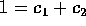

、 である。
また、 （第 i 成分以外は、0）とすると、 は、R の両側イデアルである。
可換環 R の二つのイデアル I,J が I+J = R を満たすとき、I は J と互いに素であるという。すなわち次の同値条件を満たすことである。
においては、 と が互いに素な事と、 すなわち、m と n の最大公約数が 1 であることは同値である。実際、x+y = 1 となる が存在するということは、am+bn = 1 となる が存在することであり、このことは、
と が互いに素な事と、 すなわち、m と n の最大公約数が 1 であることは同値である。実際、x+y = 1 となる が存在するということは、am+bn = 1 となる が存在することであり、このことは、 と同値であるからである。
と同値であるからである。
「3 で割って 1 余り、10 で割って 3 余り、7 では割り切れ、13 で割ると 11 余るような数はあるだろうか。またあるならばそれをすべて求めることが出来るか。」という種類の問題は、古くからいろいろと考えられていたようで孫子の「兵法」に軍隊の編成の問題から議論されていることなどから、この問題を取り扱った次の定理は中国剰余定理 (Chinise Remainer's Theorem) と呼ばれているとのことである。
n = 2 のとき 仮定より、 となる がある。そこで、 とおくと、 で、
となる。 も同様にして得る。
n > 2 のとき まず、各 i について、次の性質を満たす が存在することを示す。
記号を見やすくするため、i = 1 のときを考える。 については、 だから、 となる、 、 がある。すべてを掛け合わせると、
、 がある。すべてを掛け合わせると、
だから、 とおくと、 である。とくに、 すなわち、二つのイデアル 、 は互いに素であることが分かる。上記 n=2 の時は、既に示してあるから、 で、
を満たすものが存在することが分かる。ところが、 に対して、 であるから、 でもある。これで最初の主張が示された。
に対して、 であるから、 でもある。これで最初の主張が示された。
今、各 i について、 をとり、 とおくと、
となり、求めるものが得られた。